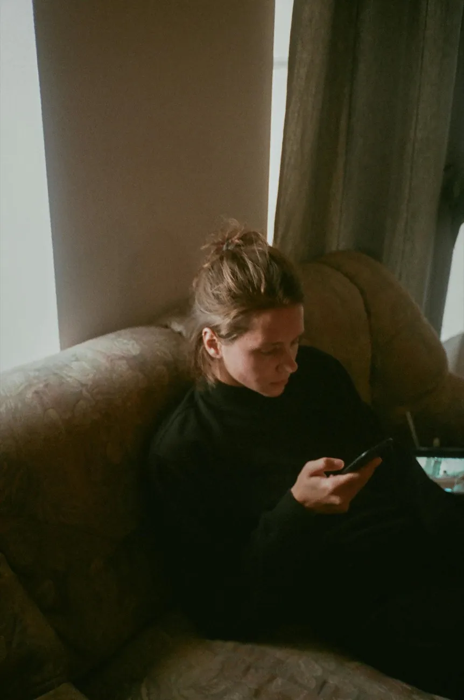
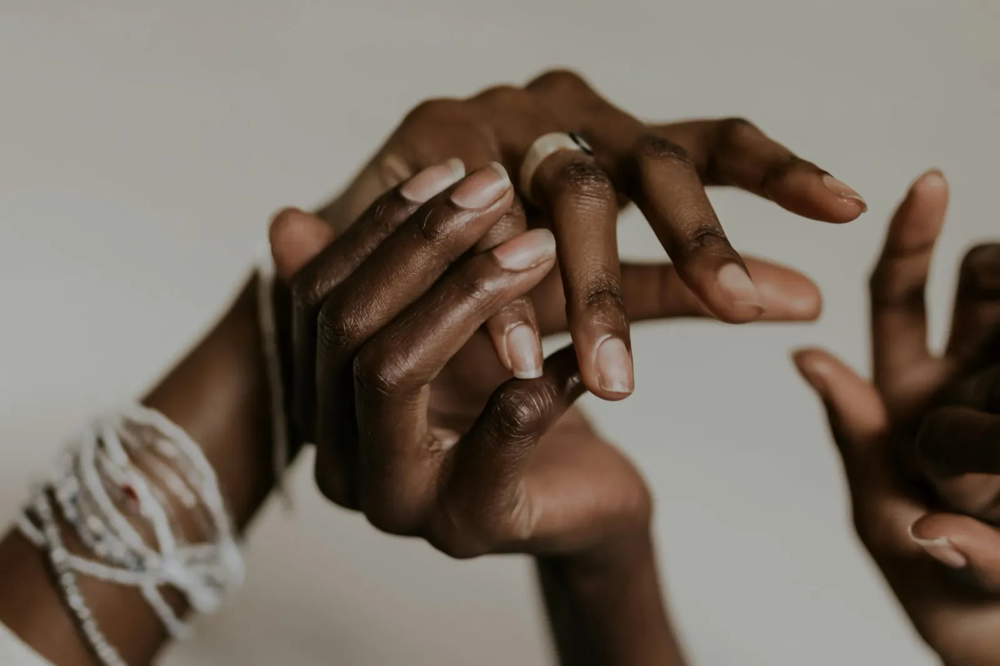

1 de cada 3
Prevención
Una de cada tres mujeres convivirá con ansiedad o depresión a lo largo de su vida. Cuanto antes se nombra, menos pesa.
¿Estoy bien porque realmente lo estoy o porque es lo que respondo automáticamente?
Juntos en la prevención de los problemas de salud mental de las mujeres

✱ Abrimos la duda
A veces decimos «estoy bien» sin pararnos a pensar cómo estamos realmente.
Lo que decimos · lo que no decimos
Toca cada frase para ver lo que hay debajo

✱ Lo que se normaliza
Un mal día es un mal día. Un cansancio que no se va, una tristeza que se instala o una tensión constante son otra cosa. Lo que se repite, cuenta.
¿Hace cuánto que no te lo preguntas?
Cuestionario · 3 pasos · 4 minutos
A veces, preguntártelo es el primer paso.
Mujeres a las que queremos escuchar
Es una herramienta de prevención y autoobservación, nunca un diagnóstico.
✱ Lancôme + Fundación Manantial
Una de cada tres mujeres convivirá con ansiedad o depresión a lo largo de su vida. Cuanto antes se nombra, menos pesa.
La ansiedad y la depresión se diagnostican hasta el doble en mujeres que en hombres. Hablar de ello es parte del cuidado.
Es el tiempo que puede pasar entre los primeros síntomas y pedir ayuda. El estigma es lo que alarga esa espera.
«No se trata de que todo el mundo vaya a terapia y busque un diagnóstico. Lo primero es eliminar las barreras sociales y poder hablar de cómo nos sentimos.»
Fundación Manantial✱ Cómo entendemos la salud mental desde Fundación Manantial
¿Por qué esperamos a estar mal para preguntarnos cómo estamos?
No hace falta estar mal para preguntarte cómo estás. Revisarlo es un gesto de cuidado, no una señal de alarma.
A veces, lo preocupante es haber dejado de preocuparse.
¿Y eso que has normalizado merece que te pares a mirarlo? Un mal día es un mal día. Lo que se repite, cuenta.
¿Por qué nos cuesta tanto decir que no estamos bien?
Hablar de salud mental no debería costar más que hablar de cualquier otra cosa que nos duele.
¿Y si estar bien también se revisa?
Preguntarte cómo estás también es cuidarte. Igual que cualquier otra revisión.
Hablemos de salud mental.
Hablar de cómo estamos también es cuidarnos. Lo primero no es un diagnóstico: es poder decirlo en voz alta.
✱ Artículos Lancôme
Contenido para seguir leyendo, elaborado con Fundación Manantial y alojado en Lancôme.
 5 min de lectura
5 min de lecturaCansancio, irritabilidad, desconexión: cómo distinguir una mala racha de algo que conviene mirar de cerca.
Leer en Lancôme 4 min de lectura
4 min de lecturaEl peso de la autoexigencia y del «yo puedo con todo» en la salud mental de las mujeres.
Leer en Lancôme 6 min de lectura
6 min de lecturaPequeñas rutinas con evidencia detrás para cuidar el ánimo en el día a día.
Leer en Lancôme✱ Voces

✱ Fundación Manantial
Desde 1995 trabajamos por los derechos y la recuperación de las personas con problemas de salud mental y sus familias: atención comunitaria, vivienda, empleo, tutela y sensibilización. Creemos que la salud mental se sostiene en comunidad, no en silencio.
Proyectos de Fundación Manantial